Explore Cape Town
A Brief History
Cape Town began as a Dutch East India Company refreshment station in 1652 and grew into a strategic port at the Cape of Good Hope. British rule, emancipation, and apartheid shaped its harbour, Company Gardens, and Table Mountain backdrop. Today the city links Atlantic trade routes to South Africa's legislative capital. Victoria & Alfred Waterfront and Bo-Kaap quarters extend harbour heritage beneath Table Mountain.
Attractions Map
Top Sights & Activities
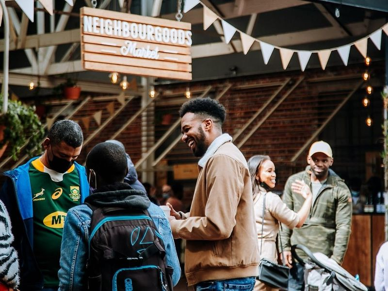
The Neighbourgoods Market
The Neighbourgoods Market, located at the Old Biscuit Mill in Woodstock, Cape Town, has been a trendsetting Saturday market since its establishment in 2006. It played a pivotal role in revitalizing the neighborhood and is now a celebration of street culture, food, design, and music.
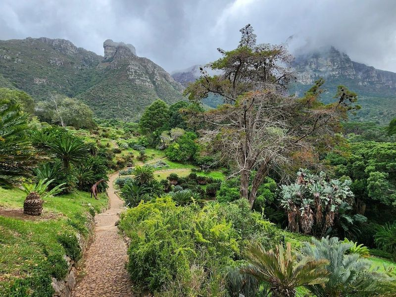
Kirstenbosch National Botanical Garden
Kirstenbosch National Botanical Garden is a hillside garden and nature reserve that boasts rare plant species, walking trails, and mountain views. Spanning 52,800 square kilometers, it is renowned for its unique flora and captivating location. The main entrance features an information center, souvenir shop, and a conservatory ideal for breakfast. The Tree Canopy Walkway, also known as the 'Boomslang,' offers panoramic views as it winds through the trees.
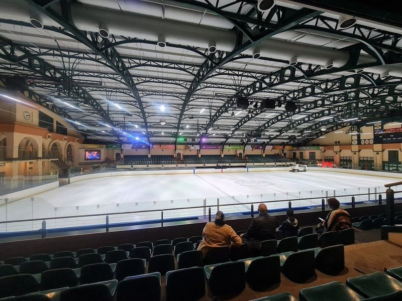
GrandWest Casino and Entertainment World
GrandWest Casino and Entertainment World is a vast 24-hour complex offering casino gaming tables, slots, cabaret, and kids' arcades. It's conveniently located near Sun International's hotels in Cape Town, providing visitors with a choice of accommodation at the 5-star Table Bay Hotel or the family-friendly GrandWest. The location also offers easy access to tourist attractions like the Castle of Good Hope.
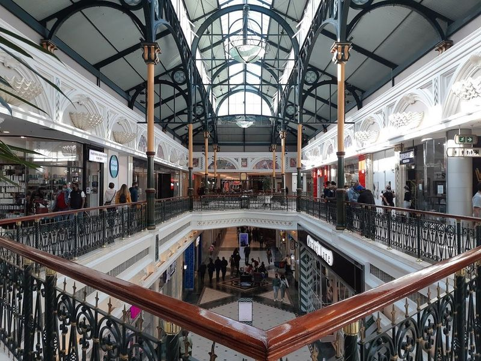
Canal Walk Shopping Centre
Canal Walk Shopping Centre is a premier retail destination with architecture and an impressive array of over 400 stores, restaurants, and entertainment options. As the largest shopping mall in Cape Town and the third largest in Africa, it offers a diverse selection of clothing stores, luxury boutiques, bookshops, electronic outlets, and more. Visitors can also enjoy a movie theater and various entertainment areas.
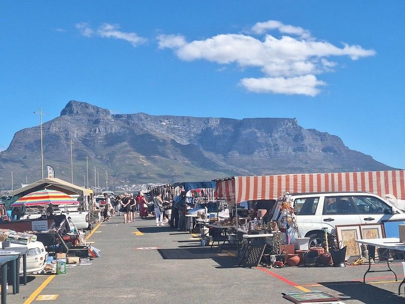
Milnerton Market.
Milnerton Flea Market, located in the Northern Suburbs of Cape Town, offers a unique outdoor shopping experience with around 250 stalls selling a variety of items like antique tea sets, glassware, old car parts, and war medals. The market is open every weekend and provides visitors with a diverse range of goods including antiques, collectibles, secondhand electronics, and household items.
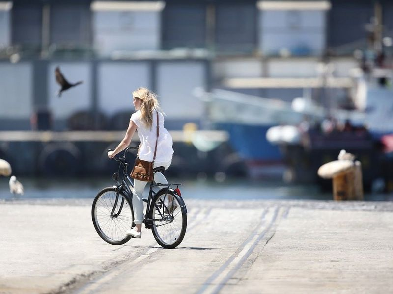
V&A Waterfront
The V&A Waterfront, situated in Table Bay Harbour at the foot of Cape Town City Centre, is a sprawling complex that encompasses residences, commercial establishments, dining venues, retail outlets and an art museum. Spanning over 123 hectares and divided into five distinct sections, it offers an array of more than 450 stores catering to diverse interests from local crafts to international brands.
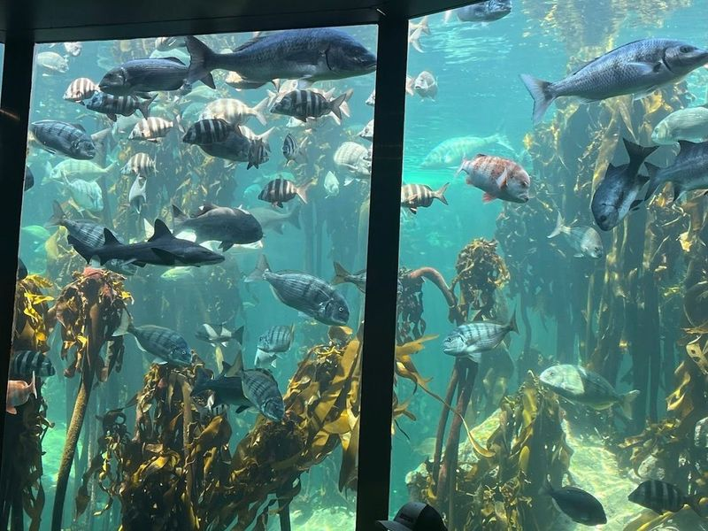
Two Oceans Aquarium
The Two Oceans Aquarium, located at the V&A Waterfront, is a captivating indoor aquarium and conservation center that provides an immersive experience for visitors. It offers a variety of exhibitions and interactive opportunities for children to learn about marine life. The facility is home to a diverse array of sea creatures from both the Atlantic and Indian Oceans, including sharks, stingrays, jellyfish, turtles, and colorful fish.
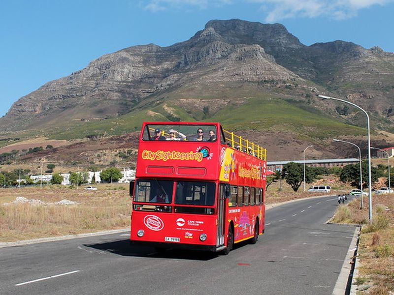
City Sightseeing Cape Town Visitor Center
City Sightseeing Cape Town travellers Center is listed among principal sites for Cape Town within South Africa. Municipal and regional heritage listings document its place in the historic centre and travellers routes through Cape Town. City Sightseeing Cape Town Visitor Center is listed among principal sites for Cape Town within South Africa.
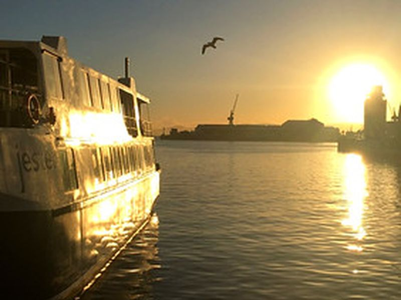
The Nelson Mandela Gateway To Robben Island
The Nelson Mandela Gateway To Robben Island is listed among principal sites for Cape Town within South Africa. Municipal and regional heritage listings document its place in the historic centre and travellers routes through Cape Town. The Nelson Mandela Gateway To Robben Island is listed among principal sites for Cape Town within South Africa.
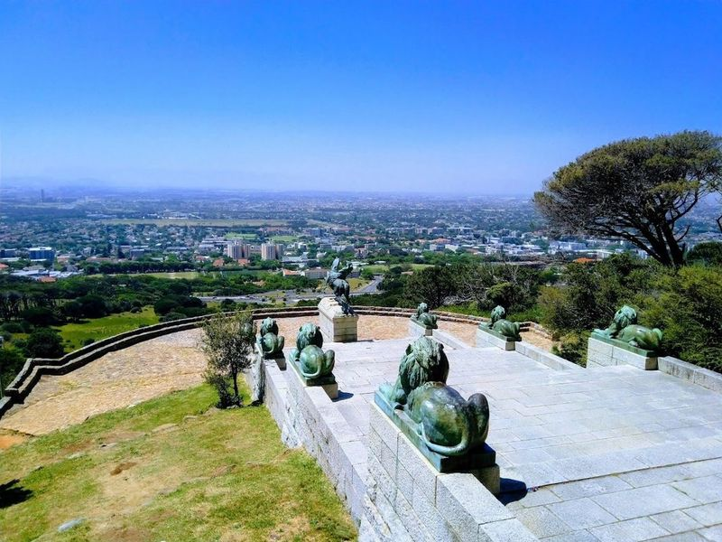
Rhodes Memorial
Rhodes Memorial is an elaborate monument dedicated to Cecil Rhodes, a prominent figure in South African history. The site offers panoramic views from its mountaintop location and features a restaurant for visitors to enjoy. Cecil Rhodes was known for his involvement in the diamond trade and his political career as Prime Minister of the Cape Colony.
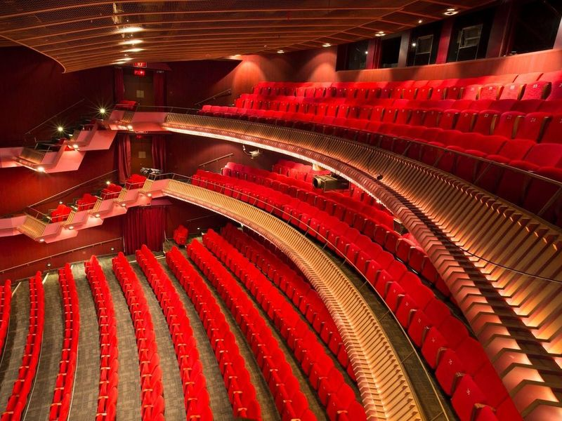
Baxter Theatre Centre
Located in Rondebosch, just east of Cape Town's CBD, the Baxter Theatre Centre is a renowned performing arts complex that showcases a diverse range of cultural performances including music, drama, comedy, and dance. It has been an integral part of South Africa's rich performing arts history by defying censorship during the Apartheid era and continues to uphold this legacy by hosting cutting-edge local and international productions.
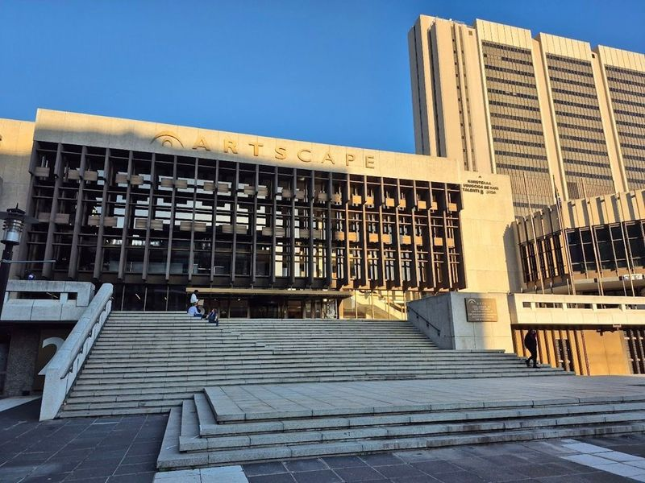
Artscape Theatre Centre
The Artscape Theatre Centre, a large 1970s complex in Cape Town, has been a hub for arts and culture since its opening in 1971. It is conveniently located near the CBD, Convention Centre, and V&A Waterfront. The impressive theatre complex covers 14,000 square meters and includes an Opera House seating 1487, a theatre seating 540, a smaller theatre seating 140, gardens, a piazza, rehearsal rooms and secure parking.
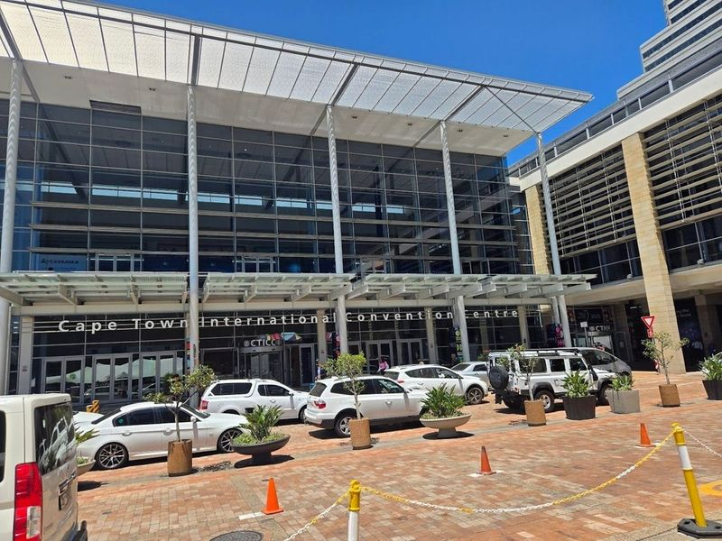
CTICC (Cape Town International Convention Centre)
CTICC (Cape Town International Convention Centre) is listed among principal sites for Cape Town within South Africa. Municipal and regional heritage listings document its place in the historic centre and travellers routes through Cape Town. CTICC (Cape Town International Convention Centre) is listed among principal sites for Cape Town within South Africa.
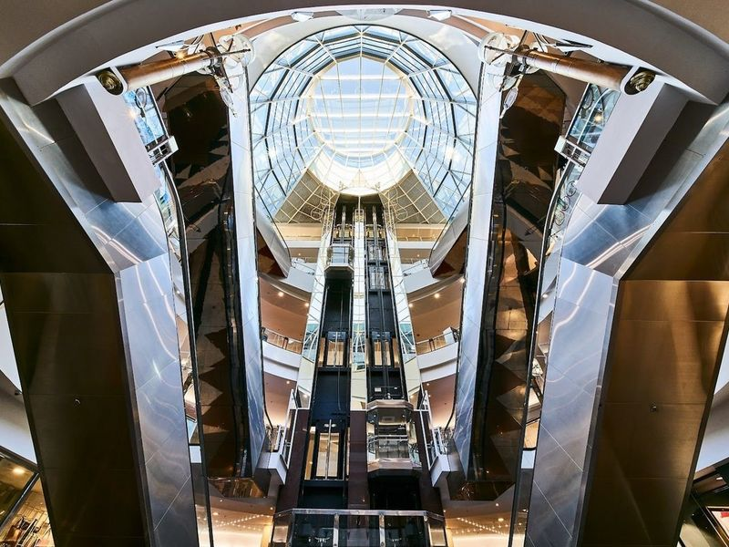
Cavendish Square
Cavendish Square, In Claremont, is a premier shopping destination in Cape Town's Southern Suburbs. With over 200 upmarket boutiques and stores, it offers a wide selection of high-end fashion, home decor, arts and crafts, electronics, and more. The mall also houses mainstream chain retailers, a cinema, a food court, and coffee shops.
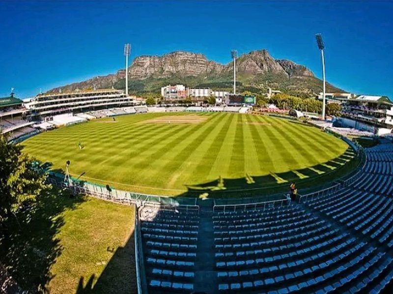
Newlands Cricket Ground
Newlands Cricket Ground, also known as Sahara Park Newlands, is a stadium located in Cape Town, South Africa. It is home to the Cobras and offers a picturesque backdrop of Table Mountain and lush green lawns. The ground hosts international cricket matches, including the popular New Years Test. Considered beautiful cricket grounds globally, it has undergone recent renovations while maintaining its scenic charm.
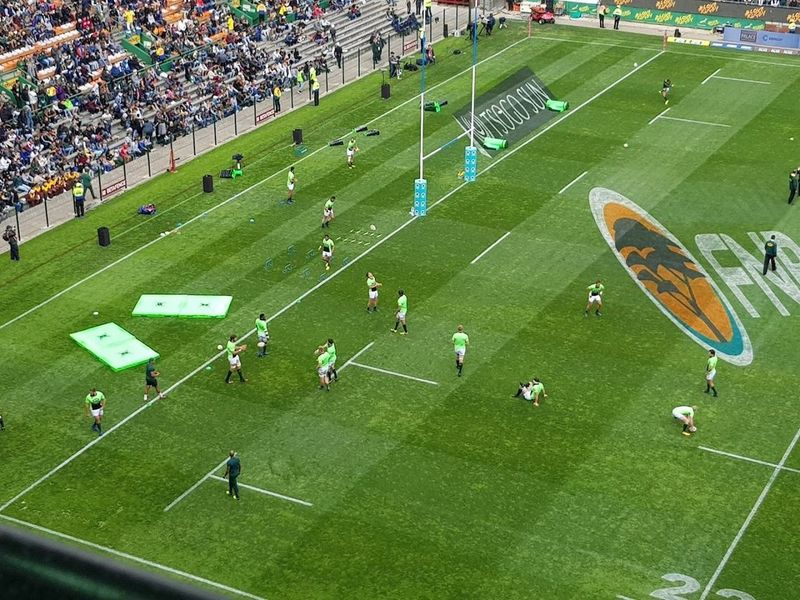
Newlands Rugby Stadium
Newlands Rugby Stadium is a historic and venue In Cape Town, South Africa. It is the oldest rugby stadium in the country and the second oldest in the world. Home to the Stormers and Western Province, it attracts passionate rugby fans who fill up its 51,000 capacity during game days. The stadium's rich history dates back to 1890, making it respected rugby stadiums globally.
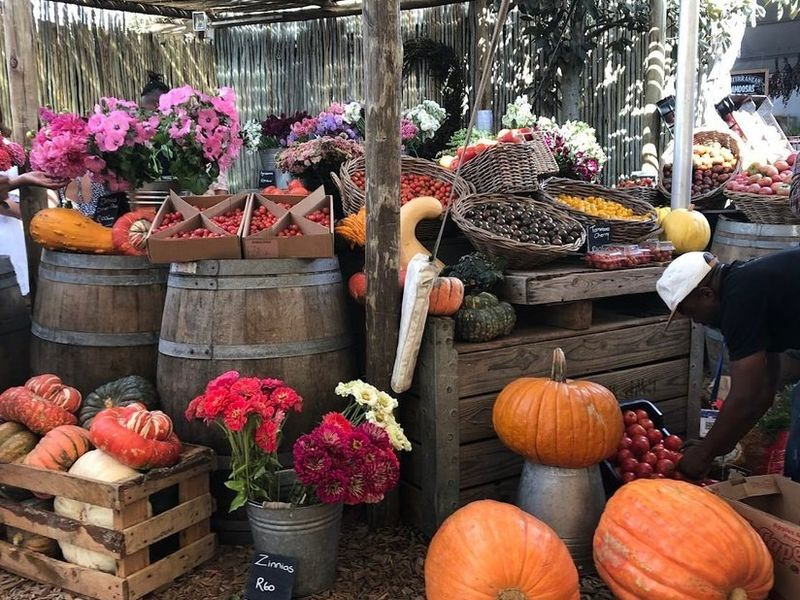
Oranjezicht City Farm Market
Located near the V&A Waterfront, Oranjezicht City Farm Market is a farmers' market that takes place every Saturday. It includes fresh, locally grown produce including fruits, vegetables, and herbs. In addition to farm-fresh goods, visitors can also find artisanal foods such as breads, cheeses, nuts, spices, and ethically sourced meats.
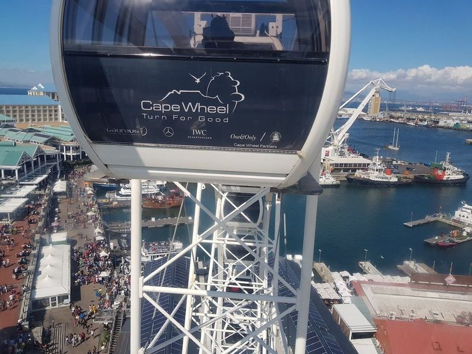
The Cape Wheel
The Cape Wheel is a 40-meter observation wheel with 30 air-conditioned, enclosed cabins that offer panoramic views of Cape Town and the V&A Waterfront. It's a popular spot for romantic proposals, offering versatile options to visit during sunny days or magnificent sunsets. The experience lasts 12-15 minutes and provides views of the city and the ocean, including the famous Robben Island.
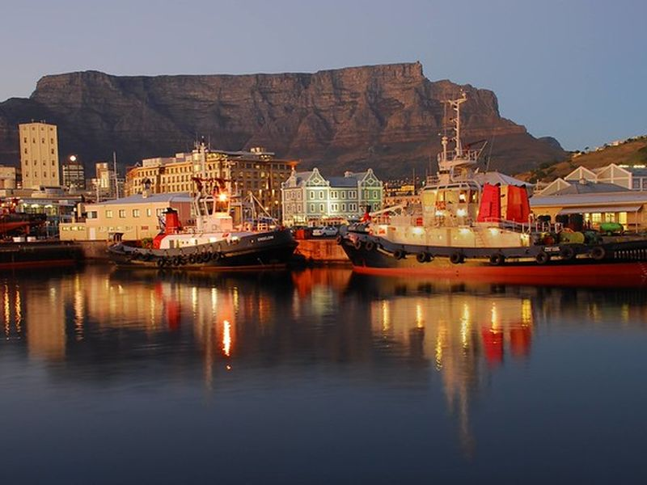
Waterfront, Cape Town
Waterfront, Cape Town is listed among principal sites for Cape Town within South Africa. Municipal and regional heritage listings document its place in the historic centre and travellers routes through Cape Town. Waterfront, Cape Town is listed among principal sites for Cape Town within South Africa.
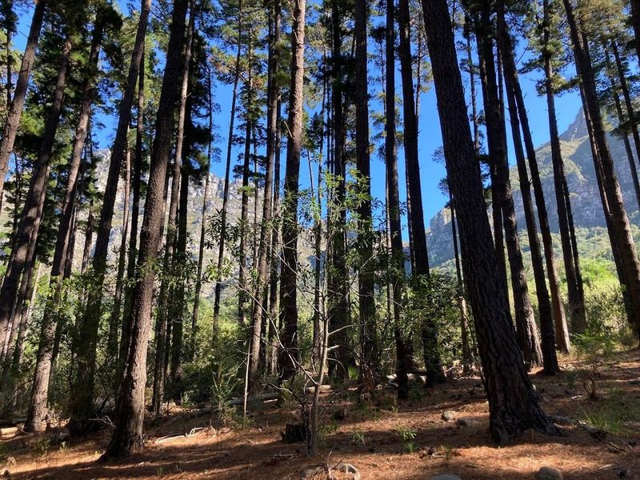
Newlands Forest
Nestled on the eastern slopes of Table Mountain in Cape Town, South Africa, Newlands Forest is a captivating natural haven offering a mix of lush alpine landscapes and historical significance. This UNESCO World Heritage Site boasts a network of boardwalks and dirt paths winding through pine trees, streams, and indigenous fynbos.
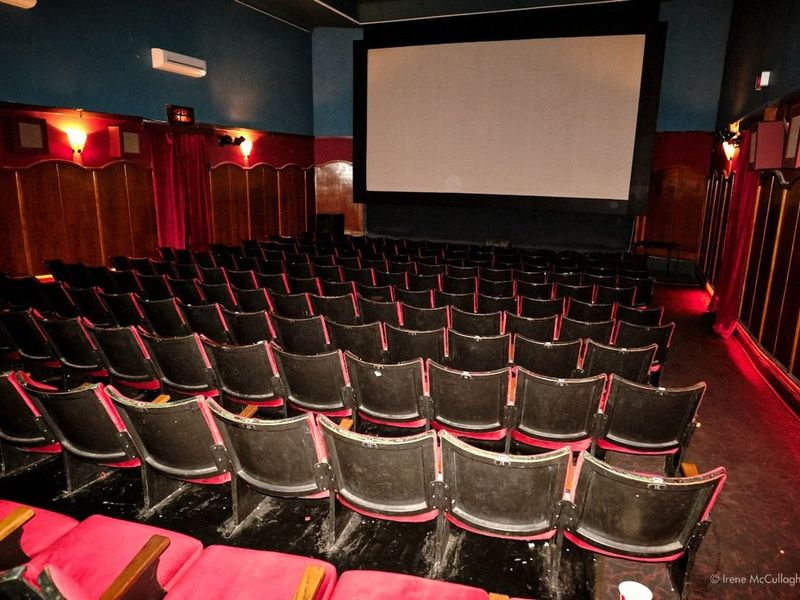
The Labia Theatre
The Labia Theatre, an independent 4-screen arthouse cinema established in 1949, offers a unique and nostalgic movie experience in South Africa. Located on Orange Street, it was originally opened by Princess Labia as a venue for live performances. Today, it attracts film enthusiasts and couples with its retro decor, affordable tickets, licensed bar, and terrace where patrons can enjoy drinks.
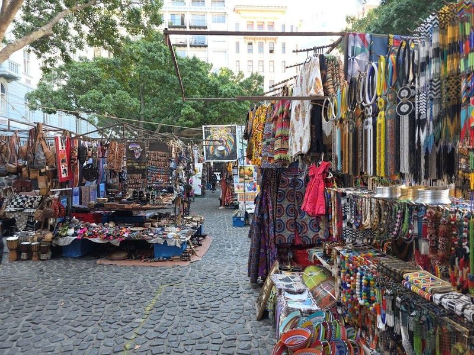
Greenmarket Square
Greenmarket Square is a bustling market located in a historical square that dates back to the late 1600s. It offers a atmosphere with stalls selling locally made art, crafts, clothing, and African curios. The market is known for its colorful wall hangings, paintings, necklaces, toys, and lively music from street musicians. Over the years, it has transformed from a vegetable market and watering hole to a lively flea market where visitors can enjoy bargaining for goods within reason.
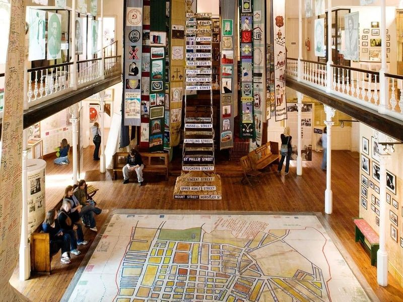
District Six Museum
The District Six Museum, located in the Buitenkant Methodist Church, is a poignant reminder of the forced removal and demolition of homes that took place during apartheid in the 1970s. The museum's name pays homage to the once diverse and multiracial community of District Six, which was declared a whites-only area by the apartheid government.
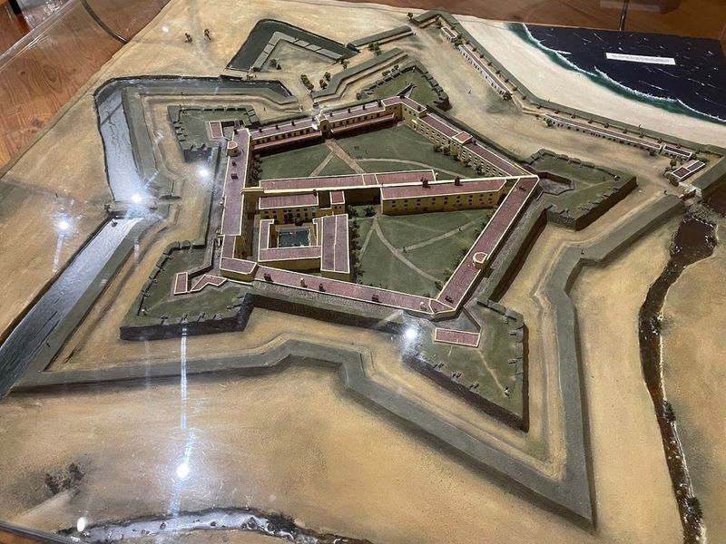
Castle of Good Hope
The Castle of Good Hope, a 17th-century colonial fortress, is a significant historical site in South Africa. It was constructed by Jan van Riebeeck and the Dutch East India Company to protect early settlers and maintain law and order. The castle's strategic location near the Company Gardens served as a refreshment station for passing ships, providing fresh produce. This oldest building in South Africa was built with local stone by soldiers and slaves.
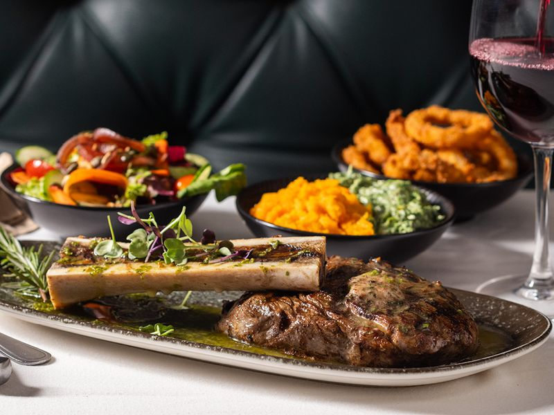
The Hussar Grill Camps Bay
The Hussar Grill Camps Bay is a renowned steakhouse with over 55 years of experience in serving top-quality, succulent steaks and a variety of house specialties. Established in 1964, this premier restaurant is committed to offering only the Class-A grain-fed beef and game. The restaurant's wine selection complements its menu options, showcasing dedication to enhancing the dining experience.
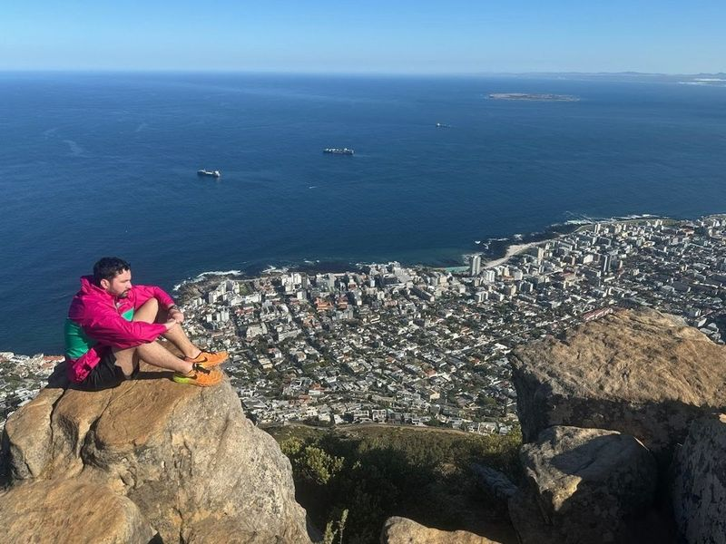
Lion's Head Hiking Trail
Lion's Head Hiking Trail is a well-known and popular hiking trail in Cape Town, offering panoramic views of the city and the coast. It has been featured in the renowned book 'Mike Lundy's Walks in the Cape Peninsula' for its viewpoints. Positioned between Table Mountain and Signal Hill, this almost conical mountain provides a 360-degree view of the city, sea, and Table Mountain.
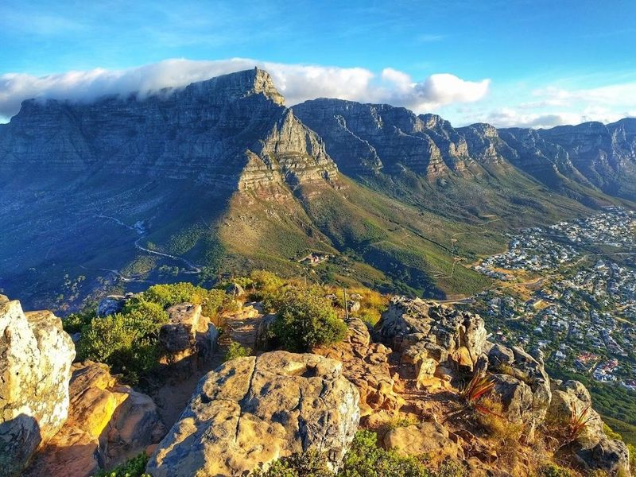
Lion's Head
Lion's Head, a prominent mountain in Cape Town, offers panoramic views of the city, the Atlantic Ocean, Table Mountain, and the Cape Peninsula. It stands at 669 meters above sea level and is a beloved hiking destination. The hike to the summit provides 360-degree views of Cape Town and the Atlantic seaboard. Visitors can witness the City Bowl come alive at sunrise or admire the golden sun rays on Table Mountain. The peak also offers glimpses of Robben Island.
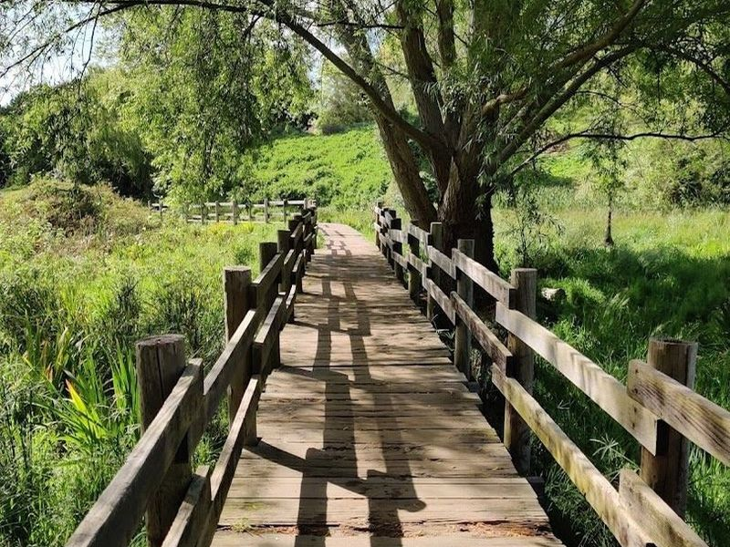
Alphen Trail
Alphen Trail in Constantia is a picturesque walking route that offers a long, flat loop with lush greenery and a gentle river flowing through it. The trail is family and dog-friendly, making it perfect for all fitness levels. While it can get busy on weekends with unleashed dogs, the spacious paths still allow for an enjoyable experience. Parking is available at various entrances, and there's an option to continue onto the Diepriver trail across the road.